Simplicial
5 Some Important Model Structures
5.1 Model structure on \(S\)-enriched categories
Let \(S\) be a monoidal model category and let \(\Cat _S\) be tha category of (small) \(S\)-enriched categories. We will introduce a model structure on \(\Cat _S\).
Since \(S\) is monoidal, we obtain a monoidal structure on \(hS\) by inverting weak equivalences. Given an \(S\)-enriched category \(C\), there is an associated \(hS\)-enriched category which will be called \(hC\).
We say that \(F:C \to C'\) in \(\Cat _S\) is a weak equivalence if the induced functor \(hC \to hC'\) is an equivalence of \(hS\)-enriched categories. In other words:
-
• For every \(X,Y \in C\), the map \(\Map _C(X,Y) \to \Map (FX,FY)\) is an equivalence.
-
• Every object \(Y \in hC'\) is equivalent to some \(F(X)\).
Suppose that the weak equivalences in \(S\) are stable under filtered colimits. Then the same is true for \(\Cat _S\). Moreover if \(S\) is also combinatorial, then the weak equivalences of \(\Cat _S\) are generated under filtered colimit by a set. To see this, they are clearly generated by weak equivalences between categories with finitely many objects and \(\kappa \)-compect mapping spaces, which is a small set. Thus in this case the weak equivalences are perfect.
If \(A\) is an object of \(S\), let \([1]_{A}\) denote the \(S\)-enriched category having two objects \(X\) and \(Y\) with the only non identity morphisms being \(A = \Map _{[1]_A}(X,Y)\). Let \([0]_S\) be the terminal \(S\)-category.
Let \(C_0\) denote the collection of morphims in \(S\) of the following types:
-
1. The inclusion \(\phi \to [0]_S\).
-
2. The induced maps \([1]_{A} \to [1]_{A'}\) where \(A \to A'\) ranges over a set of generators for the weakly saturated class of cofibrations in \(S\).
-
Proposition 5.1. Let \(S\) be a combinatorial monoidal model category. Assume that every object of \(S\) is cofibrant and that the collection of weak equivalences in \(S\) is stable under filtered colimits. Then there exists a left proper combinatorial model structure on \(\Cat _S\) with the weak equivalences as defined above and the cofibrations generated by \(C_0\).
-
Proof. It suffices to verify the conditions of Proposition 4.43. Under the hypotheses, we have already \(W\) is perfect. Suppose \(f\) has the right lifting property with respect to everything in \(C_0\). Then because of \(\phi \to [0]_S\), the map is essentially surjective, and because of \([1]_A \to [1]_{A'}\), the map on mapping spaces are triival fibrations, in particular weak equivalences.
Now we must verify the last condition, namely that weak equivalences are stable under being pushed out by pushouts of \(C_0\). So suppose that \(F:C \to D\) is a weak equivalence, and \(G:C \to C'\) is a pushout of a morphism in \(C_0\). We would like to show that \(F':C' \to D' = D \cup _C C'\) is a weak equivalence.
First consider the case that \(G\) is a pushout of a map \(\emptyset \to [0]_S\). In this case, \(F'\) is just obtained by adding adjoining an object with no nonidentity morphisms, so it is clear that it is an equivalence.
Now suppose \(G\) is the pushout of a map \([1]_{A} \to [1]_{T}\). First we will construct the pushout, \(C'\). \(C\) is equipped with a map \(h: S \to \Map (x,y)\), and \(C'\) is the universal \(S\)-enriched category with an extension of \(h\) to \(T\).
We define the objects of \(C'\) are that of \(C\) and the map \(C \to C'\) is the identity on objects. Fix objects \(w,z \in C'\). Let \(M_C^k, k\geq 0\) be the objects in \(S\) given by \(\Map _{C}(y,z) \otimes T \otimes (\Map _C(y,x)\otimes T)^{\otimes {n-2}}\otimes \Map _C(w,x)\) for \(n\geq 2\), \(M_C^1= \Map _C(y,z)\otimes T\otimes \Map _C(w,x)\), \(M_C^0 = \Map _C(w,z)\). \(M_C^k\) can be thought of as morphisms in \(w \to z\) in \(C'\) with a factorization through an object of \(S\) \(k\) times.
We can identify morphisms in the different \(M^i_C\) that should be the same in \(C'\). Namely, this means taking a colimit along various restrictions from \(T\) to \(A\) of the composition maps, and we define \(\Map _{C'}(w,z)\) to be the result. It is straightforward to verify that this is the pushout category. Note that the object \(\Map _{C'}(w,z)\) comes with a natural filtration via the images of the \(M^i_C\)s. The same construction gives a model for \(D'\), where we would like to show that \(C' \to D'\) is an equivalence. To see this it suffices to check that the map is an equivalence on mapping spaces. Since weak equivalences behave nicely wrt filtered colimits, it suffices to check this on the filtered pieces.
This follows from induction on the filtered piece. Let \(N^i_C\) be object mapping to \(M^i_C\) consisting of things in \(M^i_C\) except one morphism in \(A\) instead of \(T\). \(N^I_C\) can be constructed as a pushout of cofibrations, which maps into \(M^i_C\) as a cofibration because the tensor product is a left Quillen bifunctor. For \(i=0\), it is an equivalence by assumption. For \(i>0\), it is a pushout of the \((i-1)^{th}\) piece and \(M^i_C\) along \(N^{i}_C\). This is a homotopy pushout since \(S\) is left proper, so it suffices to check by the inductive hypothesis that \(M^i_C \to M^i_D\) and \(N^i_C \to N^i_D\) are equivalences. The first follows from Lemma 4.53 since our objects are cofibrant, and the second follows from the same Lemma along with a construction of \(N^i_C\) as a homotopy pushout. □
Some remarks about the result above: The model structures are functorial in \(S\) as follows: Suppose that \(S \to S'\) is a monoidal left Quillen functor between model categories satisfying the Proposition. Then it induces a Quillen adjunction between \(\Cat _S\) and \(\Cat _{S'}\). If \(f\) is a Quilen equivalence, then so is the induced map. Furthermore, it follows from the proof that in the model structure, a cofibration induces a cofibration on mapping spaces.
Next we will examine the fibrations in this model structure.
We will show later that \(\Cat \) admits a model structure where the fibrations are quasi-fibrations and the weak equivalences are equivalences.
-
Definition 5.4. An \(S\)-enriched category is locally fibrant if for every pair of objects \(X,Y \in C\), \(\Map (X,Y)\) is fibrant in \(S\). A functor \(F:C \to C'\) is a local fibration if
-
1. For every pair \(X,Y \in C\), \(\Map (X,Y) \to \Map (FX,FY)\) is a fibration.
-
2. The induced map \(hC \to hC'\) is a quasi-fibration.
-
-
Remark 5.4.1. Suppose that condition \((1)\) is satisfied. If \(C'\) is locally fibrant, then every isomorphism \([f]:F(X) \to Y\) in \(hC'\) can be represented by an equivalence \(f:F(X) \to Y\) because of Proposition 4.21. Let \(\overline {Y}\) be an object of \(C\) with \(F(\overline {Y}) = Y\). Then by Proposition 4.25, if \(C'\) is locally fibrant, \((2)\) is equivalent to the condition that for every equivalence \(F(X) \to Y\) in \(C'\), there is an equivalence \(\overline {f}: X \to \overline {Y}\) lifting it.
Let \([1]_S^{\sim }\) be the \(S\)-enriched category with two objects that are isomorphic and have endomorphisms \(1_S\). In otherwords, \(\Hom (X,Y)\) is always \(1_S\).
-
Definition 5.5. Let \(S\) be a monoidal model category satisfying the hypotheses of Proposition 5.1. \(S\) satisfies the invertibility hypothesis if the following condistion is satisfied:
Let \(i:[1]_S \to C\) be a cofibration of \(S\)-enriched categories classifying a morphisms \(f \in C\) which is invertible in the homotopy category \(hC\), and form a pushout
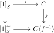
Then \(j\) is an equivalence of \(S\)-enriched categories.
-
Remark 5.5.1. Since \(\Cat _S\) is left proper, we can take a trivial cofibration \(C \to C'\) where \(C'\) is a fibrant \(S\)-enriched category. By the \(3\) out of \(4\) property, and the fact that trivial cofibrations are stable under pushout, in checking that the invertibility hypothesis holds, it suffices to assume that \(C\) is fibrant.
-
Remark 5.5.2. Also note that in the definition of the invertibiltiy hypothesis, since \(i\) is a cofibration and the model structure is left proper, the pushout is a homotopy pushout. More generally we can define \(C[f^{-1}]\) to be the homotopy pushout along a morphism \(f\) of the map \([1]_S \to [1]_S^{\sim }\). The invertibility hypothesis is then equivalent to the statement that if \(f\) is an equivalence, then the map \(C \to C[f^{-1}]\) is an equivalence. Since \(\Cat _S\) is left proper, this can be computed by factoring the map \([1]_S \to [1]_S^{\sim }\) as a cofibration and a trivial fibration \([1]_S \to E \to [1]_S^{\sim }\), and taking the pushout of the first map.
-
Remark 5.5.3. Suppose that \(C\) is fibrant \(S\)-enriched, and containes an equivalence \(f\). We can observe that the homotopy pushout map \(C \to C[f^{-1}]\) is a trivial cofibration, so it admits a retraction. This induces a map \(E \to C\). Viewing \(E\) as a cylinder for \([0]_S\), this map is a homotopy between the maps given by \(X\) and \(Y\).
More generally, given a fibration \(C \to D\) of \(S\)-enriched categories and \(f:X \to Y\) a morphism in \(C\) lifting an identity in \(D\), the functors from \([0]_S\) to \(C\) classifying \(X\) and \(Y\) are homotopic.
-
Definition 5.6. A model category \(S\) is excellent if it has a symmetric monoidal structure and satisfies the following conditions:
-
(A1) \(S\) is combinatorial
-
(A2) Every monomorphism is a cofibration and the collection of cofibrations is stable under products
-
(A3) The collection of weak equivalences is stable under filtered colimits
-
(A4) \(S\) is a monoidal model category
-
(A5) \(S\) satisfies the invertibility hypothesis.
-
\((A5)\) is a consequence of the other axioms, which is a result of Tyler Lawson. For now, it will suffice to observe that a presentable closed monoidal category with the trivial model structure is excellent.
Let \(S\) be an excellent model category. \(\Cat _S\) is naturally cotensored over \(S\): for \(K \in S\) we can define \(C^K\) to have the same objects but maps \(\Map _C(X,Y)^K\). \(\Cat _S\) is not tensored over \(S\), but given a function \(\varphi :C\to D\) only defined on objects, there is an object \(\Map ^{\phi }_{\Cat _S}(C,D)\) such that
\[\Hom _S(K,\Map ^{\varphi }_{\Cat _S}(C,D)) = \Hom ^\varphi _{\Cat _S}(C,D^K)\]
where \(\Hom ^{\varphi }\) denotes functors that agree with \(\varphi \) on the object level. This object satisfies the same property that you would expect for a tensoring except with \(\varphi \)s everywhere.
-
Lemma 5.7. Let \(S\) be an excellent model category. Fix a diagram in \(\Cat _S\)
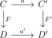
Assume that for every pair of objects \(X,Y \in C\), the diagram
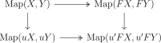
is a homotopy pullback square involving fibrant objects of \(S\) and the horizontal arrows are fibrations.
Let \(G:A \to B\) be a functor between \(S\)-enriched categories which is a transfinite composition of pushouts of generating cofibrations in \(\Cat _S\) of the form \([1]_S \to [1]_{S'}\) and let \(\varphi \) be a function from the set of objects of \(B\) to that of \(C\).
Then the diagram
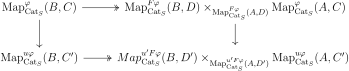
is a homotopy pullback square between fibrant object of \(S\), and the horizontal arrow are fibrations.
-
Proof. The set of morphisms \(A \to B\) such that the conclusion holds is weakly saturated, so it suffices to check it for \([1]_S \to [1]_{S'}\). if \(\phi \) has images \(X,Y\) the square above becomes
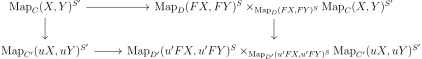
which follows from our assumptions. □
-
Proof. Suppose that \(F:C \to D\) is a fibration. Then it has the right lifting property with respect to \([1]_S \to [1]_{S'}\) so it follows that for \(X,Y \in C\), the map \(\Map _C(X,Y) \to \Map _D(X,Y)\) is a fibration. In particular, \(C\) is locally fibrant.
It suffices then to verify the condition in Remark 5.4.1. Suppose that \(f:FX\to Y\) is an equivalence in \(D\). Let \(E, D[f^{-1}]\) be as in Remark 5.5.2. Since \(S\) satisfies the invertibility hypothesis, \(D \to D[f^{-1}]\) is a trivial cofibration. \(D\) is fibrant, so this map admits a retraction, which induced a map \(r:E \to D\). Consider the lifting problem below,
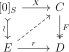
a lift exists, giving the desired lift of \(f\).
Now assume that \(F\) is a local fibration. Factor \(F\) as \(C\xrightarrow {u}C' \xrightarrow {F'}D\) where \(u\) is a weak equivalence and \(F'\) is a fibration. We will prove:
-
• Suppose we are given a commutative diagram in \(\Cat _S\).
If there is a lift from \(B\) to \(C'\) making everything commute, then there exists a lift in the diagram above from \(B\) to \(C\).
Since \(F'\) is a fibration, this will prove that \(F\) has the right lifting property with respect to all trivial cofibrations, completing the proof. First, to prove \(\bullet \), it suffices to assume that \(G\) is a transfinite pushout of generating cofibrations, since \(G\) is a retract of such a cofibration. We can reorder this transfinite pushout to factor \(G\) into \(A \xrightarrow {G_0} B' \xrightarrow {G_1} B\) where \(G_0\) is obtained by adjoining objects \(\{B_i\}_{i\in I}\) and \(G_1\) from pushouts of \([1]_S \to [1]_{S'}\). Since \(u\) is an equivalence, there exist objects \(\{C_i\}_{i\in I}\) and equivalences \(f_i:uC_i \to \alpha B_i\). Since \(F\) is a local fibration, we can lift these to equivalences \(f'_i:C_i \to C''_i\) in \(C\).
Since \(C' \to D\) is a fibration and \(D\) is fibrant, it follows that \(C'\) is fibrant. Since \(f'\) is an equivalence, the induced map \(\Map (uC''_i,C'_i) \to \Map (uC_i,C'_i)\) is an equivalence. Since both of these are fibrant, they induce an isomorphism on homotopy classes from the unit, so it follows that we can choose morphisms \(f''_i:uC''_i \to C'_i\) in \(C'\) such that composing with \(uf'_i\) gives something homotopic to \(f_i\). It follows that \(F'(f''_i)\) is homotopic to the identity. Then since \(\Map (uC_i'',C_i') \to \Map (FC_i'',F'C_i')\) is a fibration, we can lift this homotopy to modify \(f''_i\) within its homotopy class to lift the identity. Thus by replacing \(C_i\) with \(C''_i\) we can assume that each of the maps \(f_i\) projects to the identity in \(D\).
Define \(\alpha _0'\) to be the functor \(B'_0 \to C'\) given by sending \(a\mapsto \alpha \circ G_1(A)\) if \(a \in A\) and \(uC_i\) otherwise. By Remark 5.5.3, \(\alpha _0\) is homotopic to \(\alpha \circ G_1\) in \((\Cat _S)_{/D}\). Applying Proposition 4.25, we can replace \(\alpha \) by a map \(\alpha _0\). But then the map determined by \(C_i\) give a lift \(B' \to C\), so we can replace \(A\) with \(B'\). We have thus reduced to the case that the map \(A \to B\) is a transfinite composition of pushouts of morphisms \([1]_S \to [1]_{S'}\). Let \(\varphi \) be the map from the objects of \(B\) to the objects of \(C\) determined by \(\alpha \). Applying Lemma 5.7, we obtain a homotopy pullback diagram

with the horizontal maps fibrations, and all the objects fibrant. Thus we have a weak equivalence
\[\Map ^{\varphi }_{\Cat _S}(B,C) \to M = \Map ^{u\varphi }_{\Cat _S}(B,C') \times _{ \Map ^{F\varphi }_{\Cat _S}(B,D)} \Map ^{\varphi }_{\Cat _S}(A,C)\]
of fibrations over \(N=Map^{u'F\varphi }_{\Cat _S}(B,D) \times _{ \Map ^{u'F\varphi }_{\Cat _S}(A,D)} \Map ^{u\varphi }_{\Cat _S}(A,C')\). The map \(\alpha \) is given by a morphism \(1_S \to M\) lifting the map \(v',uv'\) to \(N\). Thus by applying Proposition 4.25, we can produce a lift to \(N\), which gives the desired map. □
-
-
Example 5.8.1. Let \(S\) be the category of sets with the trivial model structure. Then we have exhibited a left proper combinatorial model structure on \(\Cat \). Cofibrations are functors that are injective on objects, weak equivalences are equivalences, and fibrations are isofibrations, meaning that we can always lift isomorphisms. Note that every object is cofibrant fibrant.
5.2 Diagram model structures and homotopy limits
Here we will explain how to put model structures on functor categories \(\Fun (C,A) = A^C\) where \(A\) is an \(S\)-enriched model category, and \(C\) is a small \(S\)-category. This will yield homotopy limits and colimits.
Similarly, injective fibrations and projective cofibrations are defined by the appropriate lifting properties, and weak equivalences are defined pointwise. \(A^C\) is enriched, and pointwise tensored and cotensored over \(S\).
-
Lemma 5.10. Let \(A\) be a presentable category which is enriched, tensored and cotensored over a presentable category \(S\), and let \(C\) be a small \(S\)-enriched category. Let \(\overline {M}\) be a weakly saturated set of morphisms of \(A\) generated by a set. Let \(\tilde {M}\) be the collection of morphisms \(F \to G\) in \(A^C\) such that for every \(c \in C\), the map \(F(c) \to G(c)\) is in \(\overline {M}\). Then \(\tilde {M}\) is generated by a small set of morphisms.
-
Proof. The proof strategy is analogous to that of Proposition 2.72.
Choose a regular uncountable cardinal \(\kappa \) satisfying
-
(i) \(C\) has fewer than \(\kappa \) objects.
-
(ii) Let \(X,Y\in C\) and let \(K = \Map _C(X,Y)\). Then the functor \(x \mapsto x^K\) preserves \(\kappa \)-filtered colimits. This implies that \(\kappa \)-compact objects are stable with respect to \(\otimes K\).
-
(iii) \(A\) is \(\kappa \)-accessible. Then \(A^{C}\) is also \(\kappa \)-accessible, and the \(\kappa \)-compact objects are those which are pointwise \(\kappa \)-compact.
-
(iv) \(\overline {M}\) is generated by the subset \(M_0\) consisting of maps between \(\kappa \)-compact objects.
Let \(M\) be the collection of morphisms in \(A^C\) that are pointwise in \(M_0\). We would like to show that the saturation of \(M\) is all morphisms \(f\) that are pointwise in \(\overline {M}\). Fix such a morphism \(f:F\to G\). Corollary 2.73 implies for each \(c \in C\) that there is a \(\kappa \)-good \(M_0\)-tree \(\{Y(c)_\alpha \}_{\alpha \in A(c)}\) with root \(F(c)\) with colimit \(f(c)\).
Define a slice to be the following data:
-
1. For each object \(c \in C\), a downward-closed subset \(B(c) \subset A(c)\).
-
2. For each object \(c \in C\), a morphism
\[\eta _c:\coprod _{c' \in C}Y(c')_{B(c')} \otimes \Map _A(c',c) \to Y(c)_{B(c)}\]
making the following diagrams commutative:
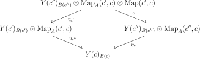 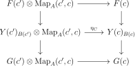
Note that \((2)\) is the data making \(c\mapsto Y(c)_{B(c)}\) into an \(S\)-enriched functor lying between \(F\) and \(G\) in \(A^C\).
-
Proof. WLOG, each \(B_0(c)\) is downward closed. Note by \((ii)\) that \(Y(c')_{B_0(c')}\otimes \Map _A(c',c)\) is \(\kappa \)-compact, so that the map \(Y(c')_{B_0(c')}\otimes \Map _A(c',c) \to G(c)\). factors through some map \(Y(c')_{B_0(c')}\otimes \Map _A(c',c) \to Y(c)_{B_1(c)}\) where \(B_1(c)\) is downward closed, \(\kappa \)-small, and contains \(B_0(c)\). This way, we can inductively construct \(B_i\) and \((\eta _c)_i\) and use compactness again to ensure that condition \((2)\) of a slice holds (after some shift of indices). Taking the union over \(i\), since \(\kappa \) is uncountable, we obtain the desired slice. (See the proof of Lemma 2.68.) □
-
Lemma 5.12. Let \(M' = \{(A'(c),\theta _c)\}_{c\in C}\) be a slice and let \(\{B_0(c) \subset A(c)\}_{c \in C}\) be a collection of \(\kappa \)-small subsets of \(A(c)\). Then there exists a pair of slices \(N = \{(B(c),\eta _c)\}_{c\in C}, N' = \{(B(c)\cap A'(c),\eta '_c)\}\) where \(B(c)\) is \(\kappa \)-small and \(N'\) is compatible with both \(N\) and \(M'\).
This proof is essentially that of Lemma 2.69. Namely, by repeatedly using compactness, one inductively constructs \(N_i\) and \(N'_i\) that satisfy the desired conditions (up to a shift of indices). Then the union over \(i\) will give the desired slices.
-
Proof. This one is analogous to Lemma 2.71. Write \(F\) as the colimit of a \(\kappa \)-filtered poset of \(\kappa \)-compact objects \(\{F_\lambda \}_{\lambda \in P}\). \(X_C\to F(c)\) factors through some \(F_[\lambda ](c)\). \(C\) has fewer than \(\kappa \) objects so we can choose \(\lambda \) uniformly in \(c\). We can replace \(P\) with the poset of things greater than \(\lambda \).
For each \(c \in C\), the composite map
\[\coprod _{c'\in C}Y_{c'}\otimes \Map _A(c',c)\to \coprod _{c'\in C}G(c')\otimes \Map _A(c',c)\to G(c) \]
factors through some \(F_{\lambda '(c)}(c)\coprod _{X_c} Y_c\). since \(G(c)\) is the colimit of \(\{F_\lambda \cup _{X_c} Y_c\}_{\lambda \in P}\). Once again we can choose \(\lambda '\) uniformly and WLOG \(\lambda '=\lambda \). By compactness again, we can assume that the diagrams below compute.
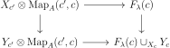 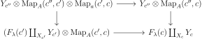
Then we can define \(G_{\lambda }(c) = F_{\lambda }(c)\coprod _{X_c}Y_c\) and it follows that there is a pushout diagram
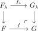
and \(f_{\lambda } \in M\). □
Now we are ready to complete the proof. Lemmas 5.11, 5.12 allow us to inductively construct a transfinite sequence of compatible slices \(\{M(\gamma ) = \{(B(\gamma )(c),\eta (\gamma )_c)\}_{c\in C}\}\). Let \(G(\lambda )\) be the enriched functor corresponding to \(M(\lambda )\), so the union of \(G(\lambda )\) is \(G\). It suffices to show that \(\lim _{\gamma '<\gamma }G(\gamma ') \to G(\gamma )\) is in \(M\).
Pointwise, \(f_{\gamma }(c)\) is the map \(Y(c)_{B'(\gamma )(c)} \to Y(c)_{B(\gamma )(c)}\). Since \(B(\gamma )(c)-B'(\gamma )(c)\) is \(\kappa \)-small, Lemma 2.66, 2.71, it follosw that \(f_{\gamma }(c)\) is the pushout of a morphism in \(M_0\). Then the result follows from Lemma 5.13. □
-
-
Proposition 5.14. Let \(S\) be an excellent model category and \(A\) a combintorial \(S\)-enriched category. Then there exists two combinatorial model structures on the category \(A^{C}\):
-
1. The projective model structure, with weak equivalences and fibrations pointwise defined.
-
2. The injective model structure, with weak equivalences and cofibrations pointwise defined.
-
-
Proof. First we consider the projective model structure. For an object \(c \in C\) and \(a \in A\), define \(F_a^c:C \to A \) by \(F_a^c(c')=A\otimes \Map _{c}(C,C')\). For any functor \(G\), \(\Hom (F_a^c,G) = \Hom (a,G(c))\) by the Yoneda lemma. It then follows that a morphism is a (not) trivial projective fibration iff it has the right lifting property with respect to \(F_a^c\to F_{a'}^c\) where \(a \to a'\) ranges over a generating set of (trivial) cofibrations.
The small object argument Proposition 4.8 shows that the factorization systems we desire exist and that the (trivial) cofibrations are generated by maps of the form \(F_a^c\to F_{a'}^c\). The conditions of Lemma 4.11 are easily verified, so we obtain a model structure that is combinatorial.
For the injective model structure, we appeal to Corollary 4.40. We will check hypotheses \((1)-(5)\).
-
1. Injective cofibrations are generated by a small set by Lemma 5.10, and are weakly saturated since cofibrations in \(A\) are.
-
2. Trivial injective cofibrations are also clearly weakly saturated, since trivial cofibrations in \(A\) are weakly saturated.
-
3. It is true that weak equivalences in \(\Fun (C,A)\) are accessible. Indeed weak equivalences are an accessible subcategory of \(A^{[1]}\) and it is generally true that accessible subcategories are stable under exponentiation in this way.
-
4. \(2\) out of \(3\) for weak equivalences is clear.
-
5. If \(f\) has the right lifting property with respect to injective cofibrations, it has the right lifting property with respect to constant functors, so each morphism in \(f\) is a trivial fibration: in particular a weak equivalence.
□
-
-
Remark 5.14.1. If \(A\) is left proper or right proper, then so is \(A^C\) since everything is pointwise. It also follows from the proof that a projective cofibration is an injective cofibration, and that an injective fibration is a projective fibration. It isn’t hard to see that these model structures are \(S\)-enriched as well.
The following result is worth noting.
-
Proposition 5.15. Let \(S\) be an excellent model category, \(C\) a small \(S\)-enriched category, and \(\adjunction {F}{A}{B}{G}\) an \(S\)-enriched Quillen adjunction between combinatorial \(S\)-enriched model categories. The composition with \(F\) and \(G\) determines another \(S\)-enriched Quillen adjunction \(\adjunction {F}{A^C}{B^C}{G}\) with respect to both the projective and injective model structures. If the original adjunction was a Quillen equivalence, then so is this one.
Note also that the identity functor gives a Quillen equivalence between the projective and injective model structures.
Now we consider functoriality in the variable \(C\). If \(C \to C'\) is a functor between small categories, then the composition yields a pullback functor \(f^*:A^{C'}\to A^C\), which preserves all limits and colimits. If \(A\) admits all limits and colimits (which is true for a presentable category), then there is a right adjoint \(f_*\) and left adjoint \(f_!\).
-
Proposition 5.16. Let \(A\) be a combinatorial \(S\)-enriched model category over an excellent model category \(S\), and let \(f:C\to C'\) be a functor between small categories. Then
-
1. The pair \((f_!,f^*)\) determines a Quillen adjunction between the projective model structures on \(A^C,A^{C'}\).
-
2. The pair \((f_*,f^*)\) determines a Quillen adjunction between the injective model structures on \(A^C,A^{C'}\).
-
-
Proof. This is clear because \(f^*\) preserves all limits and colimits, as well as weak equivalences, fibrations, and cofibrations. □
The left derived functor of \(f_!\) is called the (homotopy) left Kan extension and the right derived functor of \(f_*\) is called the (homotopy) right Kan extension.
This gives the following notion of a right Kan extension:
We can reduce homotopy Kan extensions to homotopy limits.
-
Proof. It is equivalent to show that the left adjoint \(g_!\) preserves injective trivial fibrations. To see this, we can observe that \(g_!\) is pointwise a coproduct over the fibres, since \(C'\) is cofibred in sets over \(C\). Coproducts preserve trivial cofibrations, so we are done. □
-
Proposition 5.20. Let \(A\) be a combinatorial model category, let \(f:C \to D\) be a functor between small categories, and let \(F:C \to A,G:D\to A\) be diagrams. A natural transformation \(\alpha :f^*(G)\to F\) exhibits \(G\) as a homotopy right Kan extension iff for each \(d \in D\), \(\alpha \) exhibits \(G(d)\) as a homotopy limit of the composite diagram \(F_{d/}:C\times _D D_{d/}\to C\xrightarrow {F}A\).
-
Proof. WLOG \(F\) is injectively fibrant. \(\alpha \) is a homotopy right Kan extension iff the map \(G(d) \to \lim F_{d/}\) is an equivalence by the formula for right Kan extensions. Then since the map \(C\times _D D_{d/}\to C\) is cofibred in sets, by Lemma 5.19 the homotopy limit is the ordinary limit of \(F_{d/}\). □
The following is the model categorical version of right adjoints preserve right Kan extensions (limits).
-
Proof. Simply observe that the preservation of ordinary right Kan extensions is a commutative diagram of right Quillen functors. Then the result follows from Lemma 4.56 □
There is a dual theory of homotopy colimits.
-
Example 5.21.1. Let \(A\) be a combinatorial model category and consider a diagram
\[X'\xleftarrow {f}X\xrightarrow {g}X''\]
. This is injectively cofibrant iff \(X\) is cofibrant, and \(f,g\) are cofibrations. Indeed supposing those conditions, one can show the lifing property by first lifting \(X\) and then lifting \(X'',X'\) using the fact that \(f,g\) are cofibrations.
Conversely, by choosing diagrams to test against, the conditions are necessary. Thus the notion of homotopy pushout in Definition 4.29 agrees with this notion.
We can prove as a consequence Quillen’s Theorem A.
-
Proof. It is easy to identify \(N(C)\) with the colimit of \(N(C_{/d})\) for \(d \in D\) since the nerve preserves colimits and \(C\) is clearly the colimit of \(C_{/d}\). It suffices then to show that the diagram \(D \to \SSet \) given by \(N(C_{/d})\) is a projective cofibration, since homotopy colimits are well defined up to equivalence. Let \(F_i\) be the \(i\)-skeleton of the functor \(N(C_{/d})\). it suffices to show that \(F_i\to F_{i+1}\) is a projective fibration.
From the proof of Proposition 5.14, the generating cofibrations of the projective model structure on \((\SSet )^D\) are \(F_{\partial \Delta ^n}^d\to F_{\Delta ^n}^d\) as \(d,n\) varies. For every \(n\)-composable non-identity morphisms in \(C\), there is a map \(F^d_{\partial \Delta ^n}\to F_{n-1}\). Pushing out all of these maps along \(F^d_{\Delta ^n}\), one obtains \(F_{n}\). □
5.3 Reedy model structures
There is a useful model structure between the projective and injective model structures on diagram categories when the diagram is nice.
If \(f \in g^{\oslash }\) and the lifts are unique, \(f\) is said to be right orthogonal to \(g\). Recall that a replete subcategory is one that is closed under isomorphisms, and contains all isomorphisms between its objects. In otherwords, the inclusion is an isofibration.
-
Lemma 5.23. Let \(J\) be a category and \(L,R\) a class of morphisms such that every morphism factors as something in \(L\) and then something in \(R\). The following conditions are equivalent:
-
1. \(L\) and \(R\) are exactly the classes of morphisms orthogonal with respect to each other (with \(R\) on the right).
-
2. The factorization is unique up to unique isomorphism and \(L,R\) contain isomorphisms and are subcategories.
-
3. \(L\) and \(R\) are replete subcategories of the arrow category and \(R\) is right orthogonal to \(L\).
-
-
Proof. \((1)\implies (2)\): Given two factorizations, we can lift each of them with respect to eachother, giving a unique isomorphism between them. \(L,R\) are clearly subcategories.
\((2)\implies (3)\): \(L,R\) are clearly replete. To see that \(R\) is right orthogonal to \(M\), factor the horizontal arrows in the diagram you are trying to lift, and by uniqueness of the factorization, we get the desired lift.
\((3)\implies (1)\): Suppose that \(f\) is right orthogonal to \(L\). Then create a lift in the diagram
where we have factor \(f\) into \(g\) in \(L\) and \(h\) in \(R\). We can observed that \(g\circ i\) and the identity are both solutions of the lifting problem
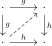
so they are equal. It follows that \(f \in R\) since it is isomorphic to \(h \in R\). □
An (orthogonal) factorization system on a category \(J\) is a pair of subcategories satisfying the conditions of Lemma 5.23.
-
Definition 5.24. A Reedy category is a small category \(J\) with a factorization system \(J^L,J^R\) satisfying
-
• Every isomorphism in \(J\) is the identity.
-
• Write \(X\leq _0 Y\) if there is either a map \(X\to Y \in J^R\) or a map \(Y\to X\in J^L\). \(X<_0Y\) if \(X\leq _0 Y\) and \(X\neq Y\). Then there are no infinite descending chains \(\dots <_0X_2<_0X_1<_0X_0\).
-
The point of a Reedy category is that functors out of it can be built inductively as we will see. This lets us for example produce a convenient model structure on functors out of it.
Note if \(J\) is a Reedy category, then so is \(J^{op}\) (with the obvious Reedy structure).
-
Definition 5.25. Let \(J\) be a Reedy category and \(C\) a category with small limits and colimits, and \(X:J\to C\) a functor. For every object \(j \in J\), we define the latching object \(L_j(X)\) to be the colimit \(\colim _{j' \in J^R_{/j},j'\neq j}X(j')\). The matching object \(M_j(X)\) is the limit \(\lim _{j' \in J^L_{j'/},j'\neq j}X(j')\). There are canonical maps \(L_j(X) \to X(j)\to M_j(X)\).
-
Example 5.25.1. Let \(X\) be a simplicial set and regard \(\Delta ^{op}\) as a Reedy category as in Example 5.24.1. Then \(L_{[n]}X\) is the collection of degenerate \(n\)-simplices of \(X\). Given a map \(f:X\to Y\) of simplicial sets, if the map \(L_{[n]}(Y)\coprod _{L_{[n]}(X)}X_n\to Y_n\) is an monomorphism for each \(n\), then \(X\to Y\) is a monomorphism. Indeed, it says that the nondegenerate simplices of \(X\) get sent to nondegenerate simplices of \(Y\). To see the converse, suppose \(f\) is a monomorphism. If \(f(\sigma )\) is degenerate for some simplex \(\sigma \), Then \(f(\sigma ) = f(\alpha ^*(\sigma ))\) where \(\alpha :[n]\to [n]\) is a nonidentity map, so it follows that \(\sigma = \alpha ^*(\sigma )\).
-
Remark 5.25.1. Let \(J \to C\) be a functor from a Reedy category to a bicomplete category. \(M_j(X)\) can be identified with \(\lim _{j' \in S}X(j')\) where \(S\) is any full subcategory of \(J_{/j}\) such that
-
1. Every non-isomorphism in \(J^{R}\) is in \(S\).
-
2. If \(f:j' \to j\) is in \(S\), then \(j\nleq j'\).
This is because these conditions imply that \(S\) is final in the category \(M_j\) is defined as the limit over.
-
-
Definition 5.26. Let \(J\) be a Reedy category. A good filtration of \(J\) is a transfinite sequence \(\{J_\beta \}_{\beta <\alpha }\) of full subcategories whose union is \(J\), and such that each successor category is obtained by adding a minimal element with respect to \(<\) not already there in the union of the ones before it.
Every Reedy category has a good filtration essentially by definition.